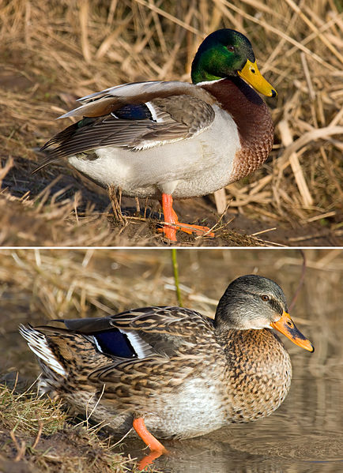
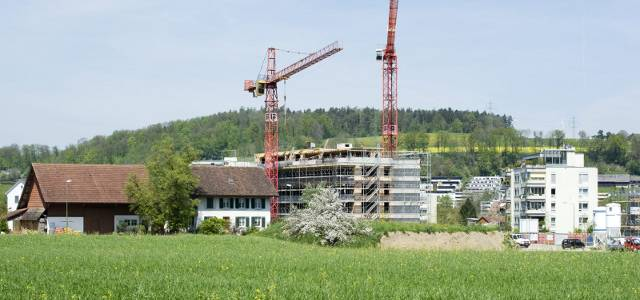
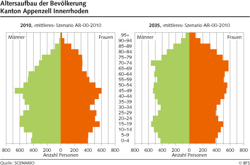

Zersiedelung und Mobilität - eine Herausforderung?
Der Jahrhundertsommer 2003 uns seine Konsequenzen
Die Globalisierung bringt neue Vögel und lässt alte aussterben
Stockente in der Schweiz

Die Stockente (Anas platyrhynchos), in älterer Literatur auch noch als Märzente[1] bezeichnet, ist eine Vogelart aus der Familie der Entenvögel (Anatidae).
Die Stockente ist die größte und am häufigsten vorkommende Schwimmente Europas und die Stammform der Hausente. Ausgewachsene Männchen sind mit ihrem grünmetallischen Kopf, dem gelben Schnabel und dem weißen Halsring unverwechselbar. Die Weibchen sind unscheinbarer hellbraun mit einer dunklen Längsstreifung. Im Flug wird bei beiden Geschlechtern der blaue Flügelspiegel sichtbar, der weiß umrandet ist. Der Flug ist schnell und gerade. Stockenten fliegen fast senkrecht auf.
Verbreitung
Stadtenten besiedeln Gewässer in Bereich von Städten, besonders Teiche und Weiher in Parks, aber auch Flüsse, die die Städte durchfließen und andere natürliche Gewässer, wie etwa Seen, im Bereich von Städten. Selbst größere Brunnen werden von der Stockente besiedelt.
Im städtischen Raum wählen Stockenten Neststandorte, die aus menschlicher Sicht häufig ausgefallen wirken. Dazu zählen Nester auf Balkonen, auf Flachdächern von Hochhäusern sowie in Schuppen oder Ställen.
Stimme
Die weibliche Stockente quakt mit 32db am Morgen und mit 45db am Abend. Es ist bisher nicht erforscht wie diese Differenz sich im Paarungsverhalten verändert beziehungsweise manifestiert.
Im Vergleich dazu das Quaken einer Quackente:
Häufig sind dunkle, oft fast rein schwarze, braune oder dunkelgrüne Individuen zu beobachten. Oft tritt ein weißer „Latz“ an der Brust auf, was auf eine Bastardisierung mit weißen Hausenten zurückgehen dürfte. Seltener sind Individuen mit weißen oder im Vergleich zu Stockenten helleren Partien. Nicht selten sind bei Männchen lediglich die Deckfedern der Flügel mehr oder minder dunkel und der weiße Halsring verbreitert oder zum Latz vergrößert. In Hamburg sind in der Innenstadt 13 Prozent der Stockenten fehlgefärbt, am Stadtrand jedoch nur 0,7 Prozent.
Um eine weitere Bastardisierung der Art mit Hausenten auszuschließen, werden solche fehlgefärbte Individuen bevorzugt abgeschossen.
Dokumentation über Stockenten
Dokumentation über Arten vertreten in den Weihern der Schweiz
Überalterung und Bevölkerungswachstum
Seit 2007 wächst die Wohnbevölkerung der Schweiz jedes Jahr um 88‘000 Personen (dies entspricht der Stadt Luzern). Jede Sekunde wird hierzulande ein Quadratmeter Naturfläche zubetoniert. - Die Weltbevölkerung nimmt jeden Tag um 220‘000 Menschen zu.
Mit diesem starken Bevölkerungswachstum, hier wie weltweit, verbauen wir unseren Kindern im wahrsten Sinne des Wortes die Zukunft!

Im Laufe des 20. Jahrhunderts ist die Zahl der älteren Menschen gestiegen, während die Anteile der Jugendlichen und der Personen im erwerbsfähigen Alter (20 bis 64 Jahre) gesunken sind. Die Form der Alterspyramide hat sich dabei von einer «Pyramide» (1900) über eine «Glocke» (1950) zu einer «Tanne» (2010) gewandelt. Für die Schweiz ist heute ein Altersaufbau typisch, bei dem die «Baby-Boom»-Generation dominiert. Ihr steht eine schwächer besetzte Jugendgeneration und eine wachsende Zahl älterer Menschen gegenüber.

Eine Studie des Bundesamtes für Statistik zeigt, dass bis 2024 Jahren die Bevölkerung in der Schweiz um 12,5 Prozent zunehmen wird. Der Hauptgrund dafür ist die internationale Zuwanderung.